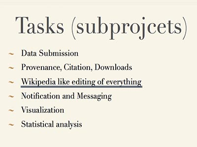

Introduction
Project Brief
This is a project from Vladimirmy Zadorozhny, my professor of database. Col*Fusion (Collaborative Data Fusion) is an advanced infrastructure for systematic accumulation, integration and utilization of historical data. It aims to support large-scale interdisciplinary research, where a comprehensive picture of the subject requires large amounts of historical data from disparate data sources from a variety of disciplines.
Technologies
html, css, javascript, php, mysql, boostrap, knockout.js
Detail
Concept
I involved into this project to refine the wiki function of this website, which is to make it more editable. allowing users to modify the data collaboratively, wiki function achieves all the editting process and consequence for users aimming to improving the concept of collabration.

My Work
Utilizing some frond-end technologies, such as javascript, ajax and knockout.js, I successfully realized editting and rollback function. The data which has been recorded by mysql can be easily overviewed by regular user and modified by authorized user. What's more, function of validation can prevent bad user detroy the data. Also, user can roll back the data to certain version. For instance, if a user doesn't like the current description of data, he or she is allowed to roll back to previous version after providing his or her reason.


Experience
- familiar with front-end framework
- considering form validation and user experience
- collaboratively developing project
- improving my knowledge of both client side and server side